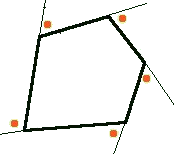
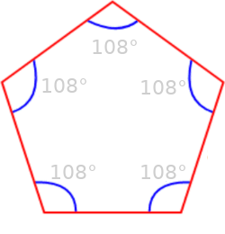
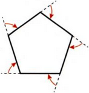

La somma degli angoli di un poligono convesso
Teorema. La somma degli angoli interni di un poligono convesso di n lati, è uguale a
(n − 2) x π
Proof. Consideriamo un punto P interno al poligono e congiungiamolo con i vertici: otteniamo tanti triangoli quanti sono i lati. Ogni triangolo ha come somma degli angoli interni un angolo piatto Peròper ottenere la somma degli angoli interni del solo poligono bisogna togliere l'angolo giro nel punto P, cioe' due angoli piatti. □
Corollario La somma degli angoli esterni du un poligono convesso è congruente a un angolo giro.
Proof. In ogni vertice del poligono la somma dell'angolo interno e dell'angolo esterno vale un angolo piatto (come vedi dalla figura nel punto A) quindi la somma degli angoli esterni e degli angoli interni dà tanti angoli piatti quanti sono i lati.
somma soli angoli interni + somma angoli esterni = n ⋅ π
Siccome, per il teorema precedente la somma degli angoli interni vale (n − 2) x π, deriva che
somma angoli esterni =n ⋅ π − (n − 2) x π = 2π □
La somma degli angoli esterni non dipende dal numero dei lati del poligono considerato.
In particolare, anche in un triangolo la somma degli angoli esterni è congruente a un angolo giro.
Poichè abbiamo detto che nei pentagoni la somma degli angoli interni è pari a 540°, nei pentagoni regolari ogni angolo misura: 540° : 5 = 108°.
The sum of the exterior angles of any polygon is 360°: Imagine this pentagon as a path. At each vertex there is a change of direction. By walking around the complete polygon so that you finish by facing in the same direction as you started, a whole turn of 360° will be made, that is the exterior angles sum to 360°.
